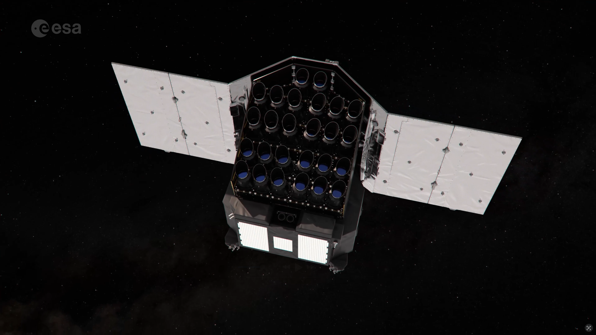
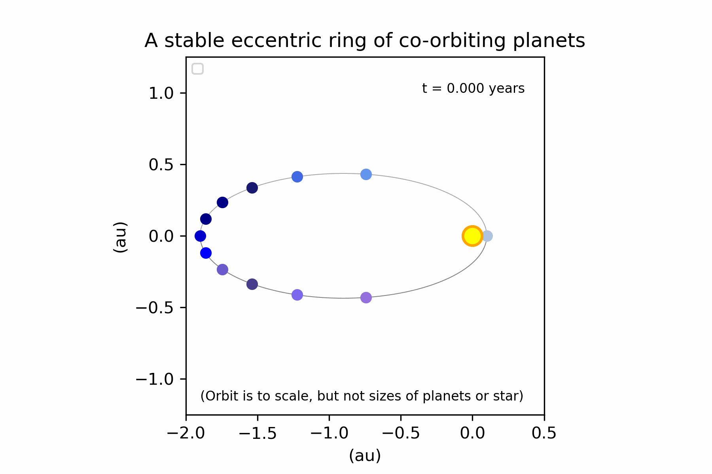
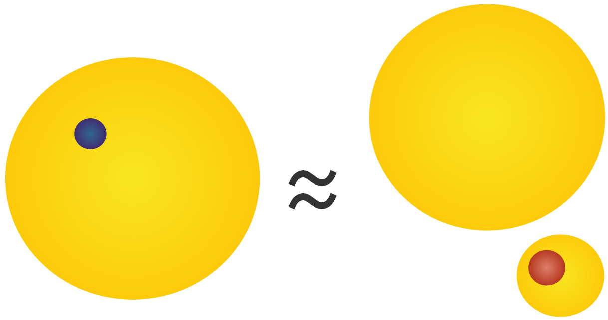
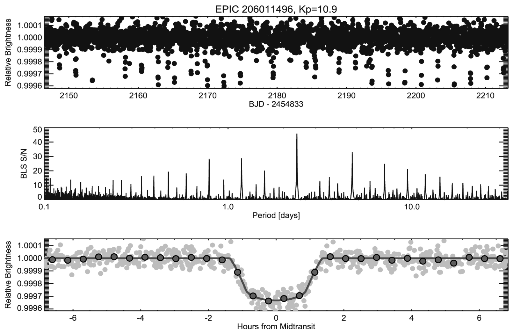
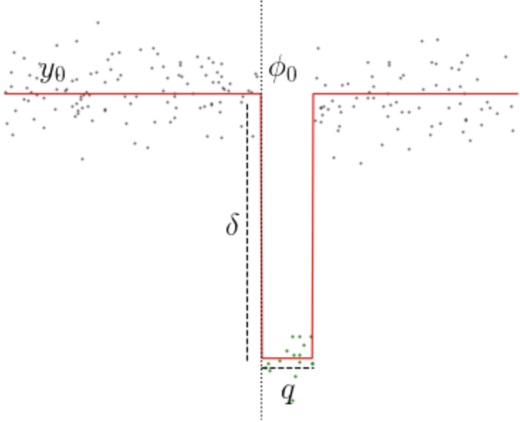

<ul class="contents-list"> <li><a href="#/part-1"><strong>Part 1:</strong> The transiting planet population</a></li> <li><a href="#/part-2"><strong>Part 2:</strong> Light curves</a></li> <li><a href="#/part-3"><strong>Part 3:</strong> Examples of transit surveys/observations</a></li> <li><a href="#/part-4"><strong>Part 4:</strong> Geometry of a transit</a></li> <li><a href="#/part-5"><strong>Part 5:</strong> False Positives</a></li> <li><a href="#/part-6"><strong>Part 6:</strong> Exoplanet detection</a></li> <li><a href="#/part-7"><strong>Part 7:</strong> Stars, Trends & Systmatics</a></li> <li><a href="#/part-8"><strong>Part 8:</strong> Accessing Data</a></li> <li><a href="#/part-9"><strong>Part 9:</strong> Modelling transits</a></li> <li><a href="#/part-10"><strong>Part 10:</strong> Projects</a></li> </ul> --- <h2 id="part-1" class="slide-part-title">Part 1: The transiting planet population</h2> <div style="text-align: center; width: 100%;"><img src="https://i0.wp.com/www.hughosborn.co.uk/wp-content/uploads/2023/11/animation_post95_dark.gif" style="width: 100%; max-height: 620px; object-fit: contain; display: block; margin: 0 auto;" /></div> --- <h2 id="part-2" class="slide-part-title">Part 2: Light curves</h2> ### Pixels to lightcurves <div style="text-align: center; width: 100%;"><img src="../slide_data/slide_images/trappist_1_k2.gif" style="height: 250px;" /></div> -v- ### Pixels to lightcurves #### Step 1) - Aperture photometry - Extract a **light curve** - the variation in brightness over time - This typically requires summing pixels within fixed "aperture" or pixel mask - We also need to subtract the **background** (i.e. remove signals present in all pixels) -v- ### Pixels to lightcurves <div style="text-align: center; width: 100%;"><img src="../slide_data/slide_images/Systematics.png" style="height: 250px;" /></div> #### Step 2) - Decorrelation - Remove systematics (e.g. flux changes due to thermal changes, spacecraft motion, etc) - Done through **detrending** / **decorrelation** - i.e. removing any trends seen in flux which are well-correlated with other timeseries. -v- ### Pixels to lightcurves #### Step 2) - Decorrelation - Typical examples: - On-board temperature (or temperature effects such as PSF width) - Measured spacecraft motion - Measured lightcurves from comparison stars (average of many stars) #### Step 3) - Normalisation - Normalise such that median=1.0 - Normalise such that median=0.0. Scale is therefore variable (e.g. %, ppt, ppm) --- <h2 id="part-3" class="slide-part-title">Part 3: Examples of transit surveys/observations</h2> ## Ground-based surveys <div style="text-align: center; width: 100%;"><img src="../slide_data/slide_images/SuperWASP.png" style="height: 250px;" /></div> -v- ## Ground-based surveys - Cheap modified cameras able to detect short-period $\sim1$% dips on stars $6<V<12$ - Multiple examples: HAT (2003), TRES & WASP (both 2004), KELT (2006), etc. - Majority ($\sim$350) of hot Jupiters orbiting bright stars found this way -v- ## Kepler <div style="text-align: center; width: 100%;"><img src="../slide_data/slide_images/Kepler-w-FoV.jpg" style="max-height: 450px; max-width: 100%; object-fit: contain; display: block; margin: 0 auto;" /></div> - First space telescope dedicated to transits (launch 2009) - NB: French **CoRoT** (2006) also found planets - 4-year mission focussed on 0.25% of sky near Cygnus - Capable of detecting planets from only a handful of ~100ppm transits -v- ## K2 <div style="text-align: center; width: 100%;"><img src="../slide_data/slide_images/K2_ecliptic.png" style="height: 250px;" /></div> - Second Kepler mission after end of precise pointing - 19$\times$80d "Campaigns" in the ecliptic plane - Reduced precision and number of stars, but still able to detect hundreds of planets & candidates - Best pipeline uses pixel-level decorrelation - [everest](https://archive.stsci.edu/hlsp/everest) -v- ## TESS <div style="text-align: center; width: 100%;"><video src="https://svs.gsfc.nasa.gov/vis/a010000/a013200/a013238/13238_TESS_First_Year_Good.mp4" controls autoplay loop muted style="max-height: 450px; max-width: 100%; object-fit: contain; display: block; margin: 0 auto;"></video></div> -v- ## TESS - All-sky transit survey with four small 10cm lensed cameras - Unable to find earthlike planets around sunlike stars (but many around M-dwarfs) - Multiple pipelines, but SPOC pipeline (e.g. detrended `PDC_FLUX`) is best -v- ## PLATO <div style="text-align: center; width: 100%;"><p></p></div> -v- ## PLATO - ESA project launching early 2027 - 26$\times$12cm cameras, covering a single 5% of the sky - Will be able to find transiting earthlike planets around brighter stars than Kepler --- <h2 id="part-4" class="slide-part-title">Part 4: Geometry of a transit</h2> <div style="text-align: center; width: 100%;"><img src="../slide_data/slide_images/Animated_composite_of_2004_Venus_transit_images_pillars.gif" style="max-height: 450px; max-width: 100%; object-fit: contain; display: block; margin: 0 auto;" /></div> -v- ## Orbits - <span class="fragment">Orbital distance (or semi-major axis) related to period through **Kepler's third law** ($P^2 \propto a^3$)</span> - <span class="fragment">Typically close-in planets have circular orbits (or very close to)</span> - <span class="fragment">Some planets orbits in elliptical orbits ($b = a(1-e)$ where $a$ & $b$ are semi-major and -minor axes and $e$ is **eccentricity**)</span> - <span class="fragment">The Sun is found at the ellipse's **focus** (Kepler's first law).</span> - <span class="fragment">Angle from observer to perihelion defined as $\omega$ (**argument of periastron**).</span> -v- ## Orbits <div style="text-align: center; width: 100%;"><p></p></div> - <span class="fragment">Both distance & velocity change along orbit according to Kepler's second law (constant area swept).</span> -v- ## Transit depth <div style="text-align: center; width: 100%;"><img src="../slide_data/slide_images/TransitGeometryP0.png" style="max-height: 450px; max-width: 100%; object-fit: contain; display: block; margin: 0 auto;" /></div> -v- ## Impact parameter <div style="text-align: center; width: 100%;"><img src="../slide_data/slide_images/TransitGeometryP1.png" style="max-height: 450px; max-width: 100%; object-fit: contain; display: block; margin: 0 auto;" /></div> - Only exoplanets with specific inclination range can transit their stars -v- ## Transit duration (chord) <div style="text-align: center; width: 100%;"><img src="../slide_data/slide_images/TransitGeometryP2.png" style="max-height: 450px; max-width: 100%; object-fit: contain; display: block; margin: 0 auto;" /></div> -v- ## Transit duration (derived) <div style="text-align: center; width: 100%;"><img src="../slide_data/slide_images/TransitGeometryP3.png" style="max-height: 450px; max-width: 100%; object-fit: contain; display: block; margin: 0 auto;" /></div> -v- ## Transit duration (eccentricity) - <span class="fragment">The above assumed a circular orbit</span> - <span class="fragment">Eccentric orbits have variable angular velocities, potentially changing the transit duration significantly</span> - <span class="fragment">TIC 241249530 b is a good example - transit duration is 2.2hrs implying a $<2$d orbit...</span> - <span class="fragment">True period is actually 167d (eccentricity of 0.94!)</span> -v- ## Limb Darkening <div style="text-align: center; width: 100%;"><img src="../slide_data/slide_images/LimbDarkening.png" style="max-height: 450px; max-width: 100%; object-fit: contain; display: block; margin: 0 auto;" /></div> -v- ## Limb Darkening <div style="text-align: center; width: 100%;"><img src="../slide_data/slide_images/LimbDarkening_transparent.png" style="max-height: 450px; max-width: 100%; object-fit: contain; display: block; margin: 0 auto;" /></div> -v- ## Limb Darkening - Multiple "limb darkening laws" parameterises drop in flux $I/I_0$ $\cos{\mu}$ - Simplest: $\frac{I(\mu)}{I(0)} = 1 - a(1-\mu)$ - the linear law - Most common: $\frac{I(\mu)}{I(0)} = 1 - u_1 (1-\mu) - u_2 (1-\mu)^2$ - the quadratic law - Theoretical LD parameters exist for most filters from fitting stellar models (e.g. [for TESS](https://www.aanda.org/articles/aa/full_html/2017/04/aa29705-16/aa29705-16.html)) -v- ## Limb Darkening (Observed) <div style="text-align: center; width: 100%;"><img src="../slide_data/slide_images/LimbDarkeningGradientWL.png" style="width: 100%; max-height: 620px; object-fit: contain; display: block; margin: 0 auto;" /></div> -v- ## Limb Darkening Approaches 1) Strong priors - Access the pre-computed tables of coefficients for a given bandpass as a function of stellar Teff & logg (Vizier, Claret et al) - Use a wider $\sigma$ than suggested by the table (0.1 & 0.2 for quadratic params $u_1$ & $u_2$, especially for cooler stars [Patel & Espinoza 2022](https://arxiv.org/abs/2203.05661)) 2) Uninformative priors - No assumptions using models. However, low-SNR transits will not constrain limb-darkening, and other parameters may be lower-precision. - In the case of quadratic parameters, reparameterise according to [Kipping 2014](https://arxiv.org/abs/1308.0009) --- <h2 id="part-5" class="slide-part-title">Part 5: False Positives</h2> - Not all dips are due to exoplanets! -v- ## False Positive - low-mass binaries <div style="text-align: center; width: 100%;"><img src="../slide_data/slide_images/exoplanet-mass-radius-all.png" style="max-height: 450px; max-width: 100%; object-fit: contain; display: block; margin: 0 auto;" /></div> - <span class="fragment">Low-mass eclipsing binaries can create Jupiter-like transit depths</span> -v- ## False Positives <div style="text-align: center; width: 100%;"><p></p></div> - <span class="fragment">Diluted binaries are a problem for all transit depths</span> - <span class="fragment">These can be around distant background stars, or close-by binary companions</span> --- <h2 id="part-6" class="slide-part-title">Part 6: Exoplanet detection</h2> <div style="text-align: center; width: 100%;"><p></p></div> - Exoplanets are (usually) extremely periodic. Therefore searches typically iterate through period/frequency space. -v- ## Packages for exoplanet detection - `Box least squared` - BLS - <span class="fragment">Extremely simple grid search looking at "boxcar" filter</span> - <span class="fragment">Implemented in [astropy.timeseries](https://docs.astropy.org/en/stable/timeseries/bls.html); and [lightkurve docs](https://lightkurve.github.io/lightkurve/tutorials/3-science-examples/exoplanets-identifying-transiting-planet-signals.html))</span> <div style="text-align: center; width: 100%;"><p></p></div> -v- ## Packages for exoplanet detection - <span class="fragment">[GerBLS](https://gerbls.readthedocs.io/en/latest/) - 10-20x faster implementation of BLS</span> - <span class="fragment">[transitleastsquares](https://transitleastsquares.readthedocs.io/en/latest/) - includes transit shape in search</span> - <span class="fragment">[Nuance](https://nuance.readthedocs.io/en/latest/)* - models both transits and trends/activity</span> - <span class="fragment">[CETRA](https://github.com/leigh2/cetra)* - simultaneous transit + trend fitting (CUDA only)</span> - <span class="fragment">$^{\rm *}$ - can also search for single transits</span> --- <h2 id="part-7" class="slide-part-title">Part 7: Stars, Trends & Systmatics</h2> ## Stellar noise <div style="text-align: center; width: 100%;"><img src="../slide_data/slide_images/ActivityTESS.png" style="max-height: 450px; max-width: 100%; object-fit: contain; display: block; margin: 0 auto;" /></div> - Stars are not constant in flux. - <span class="fragment">We need to account for this variation, by filtering/subtracting it, or co-fitting it.</span> -v- ## Modelling stellar noise - Common approaches: * <span class="fragment">**Filtering** (e.g. Savitsky-Golay, or median filter, implemented with e.g. `astropy.timeseries` or `scipy.signal` or [`wotan`](https://wotan.readthedocs.io/en/stable/))</span> * <span class="fragment">**Splines** (e.g. cubic bspline, implemented using e.g. `scipy.interpolate`)</span> * <span class="fragment">**Local polynomials** around transits</span> * <span class="fragment">**Gaussian Processes** (e.g. SHO, implemented with e.g. [`celerite2`](https://celerite2.readthedocs.io/en/latest/index.html) or [`tinyGP`](https://tinygp.readthedocs.io/en/latest/index.html))</span> - <span class="fragment">But removing variability can change transit depth/shape!</span> - <span class="fragment">Best to *mask* identified transits while filtering, or co-fit variability with transit model</span> -v- ## Modelling stellar noise - GPs - <span class="fragment">A way to parameterise correlations with time (e.g. non- or quasi-periodic variability)</span> - <span class="fragment">Covariance: the influence of past & future data on each point</span> - <span class="fragment">Kernel: the mathematical function governing how each point is influenced by past/future data.</span> - <span class="fragment">Hyperparameters: variable parameters governing the kernel (i.e. amplitude, timescale, etc)</span> -v- ## Modelling stellar noise - GPs <div style="text-align: center; width: 100%;"><img src="../slide_data/slide_images/GPs_Aigraine_DFM.png" style="max-height: 450px; max-width: 100%; object-fit: contain; display: block; margin: 0 auto;" /></div> - From [Aigrain & Foreman-Mackey (2022)](https://arxiv.org/abs/2209.08940) --- <h2 id="part-8" class="slide-part-title">Part 8: Accessing Data</h2> ## Web-based - <span class="fragment">NASA's [MAST portal](https://mast.stsci.edu/portal/Mashup/Clients/Mast/Portal.html) displays all available data products for a star</span> ## Within python - <span class="fragment">The `lightkurve` package retrieves a table of observations within python, e.g.:`lk.search_lightcurve("LHS 1140", mission="TESS", author="SPOC", exptime=120)`</span> - <span class="fragment">`lightkurve` is also a neat way to interact/plot/detrend/etc lightcurves!</span> - <span class="fragment">`astroquery` can also do similar, via e.g. `Observations.query_object("LHS 1140")`</span> --- <h2 id="part-9" class="slide-part-title">Part 9: Modelling transits</h2> #### Typical parameters: - Period $P$ - Transit time $t_0$ - Radius ratio $R_p/R_s$ - Impact parameter $b$ - Limb darkening - <span class="fragment">Eccentricity $e$ & argument of periasteron $\omega$ (occasionally)</span> -v- ## Packages for exoplanet transit modelling - <span class="fragment">[AllesFitter](https://www.allesfitter.com/) - Includes a GUI</span> - <span class="fragment">[Exoplanet](https://docs.exoplanet.codes/en/latest/) - Python class-based. Interfaced with PyMC (HMC sampling)</span> - <span class="fragment">[Juliet](https://juliet.readthedocs.io/en/latest/) - Script-based (YAML). Includes nested sampling.</span> - <span class="fragment">[Batman](https://github.com/lkreidberg/batman) - Simple pythonic transit model.</span> - <span class="fragment">[Pytransit](https://pytransit.readthedocs.io/en/latest/index.html) - Fast fortran back-end. Not very intuitive.</span> --- <h2 id="part-10" class="slide-part-title">Part 10: Projects</h2> ### Goal - <span class="fragment">Play with some data!</span> - <span class="fragment">Find something new & interesting</span> - <span class="fragment">Make some pretty plots</span> - <span class="fragment">Share this with the class</span> -v- ### Useful Resources - <span class="fragment">[MAST Portal](https://mast.stsci.edu/portal/Mashup/Clients/Mast/Portal.html)</span> - <span class="fragment">To search TESS input catalogue for stars: *Data Category->MAST Catalogs-> TESS Input v8.2*</span> - <span class="fragment">The [NASA exoplanet archive](https://exoplanetarchive.ipac.caltech.edu/); esp `tran_flag=1`, and `tic_id`</span> - <span class="fragment">The [TESS Object of Interest (TOI) Catalogue](https://exofop.ipac.caltech.edu/tess/view_toi.php); all of TESS' planet candidates</span> - <span class="fragment">Can remove identified false positives, e.g.: `valid_toi_ix = (~np.isin(toi['TESS Disposition'],['EB','IS','V','FP']))&(toi['TESS Disposition']!='FP')`</span> - <span class="fragment">Some planets have empty or incorrect periods as they were discovered in one or two transits (TOIs with $P>300$d are likely max periods)</span> - <span class="fragment">[ExoFop-TESS](https://exofop.ipac.caltech.edu/tess/) - compiled information about every TIC and follow-up campaigns</span> - <span class="fragment">[TESS Extractor](https://www.tessextractor.app/) - quick online tool for extracting lightcurves</span> -v- ### Possible project ideas 1. <span class="fragment">Do Neptunes ($2<R_p<5 R_\oplus$) with 10<P<30d host any (undetected) close-in super-Earths?</span> 2. <span class="fragment">Which TESS candidates also have archival K2 data, and does this confirm/reveal anything new?</span> 3. <span class="fragment">Does TESS data reveal anything new about K2 (or CoRoT) unconfirmed candidates? Are parameters derived from TESS consistent?</span> 4. <span class="fragment">Are the impact parameters of planets in multi-planet systems trend with distance due to mutual inclination? (NB avoid "compact" multis with TTVs)?</span> 5. <span class="fragment">How does fitted Limb Darkening parameters vary with stellar temperature for the brightest ~10 hot jupiters observed by TESS?</span> 6. <span class="fragment">Does recent TESS data for TOIs with $P>250$d (or $P={\rm nan}$) (e.g. in the Southern hemisphere) help constrain their true periods?</span> 7. <span class="fragment">Can you fit a transit model to the secondary eclipses of ultra-hot jupiters (e.g. KELT-9), and what does this tell you about the planet?</span> -v- ### Some constraints - <span class="fragment">*Transit timing variations (TTVs)* from interactions between planets close-to or in resonant orbits (e.g. 5.4 & 10.8d) make fitting simple transit models impossible.</span> - <span class="fragment">Avoid compact multi-planet systems (i.e. with period ratios <2.25x).</span> - <span class="fragment">It's probably not worth simply searching random stars for new planets, as all the "easy" candidates have been found.</span> - <span class="fragment">But it's much more likely to find additional planets in systems with already-detected existing planets</span> -v- # Good luck!